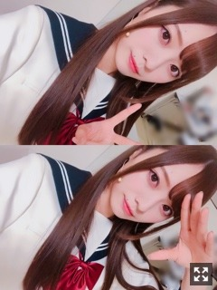
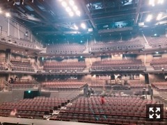
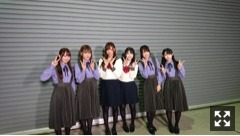
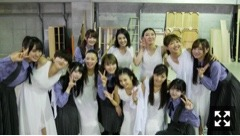
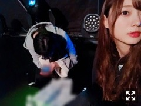

久しぶりになってしまった書きたいことが沢山あります
みなさまこんにちは！！
乃木坂46の
梅澤美波です！
かなりお久しぶりになってしまいました、、
書きたいことがたくさんあります！
順番にすこしずつ
更新出来たらなあと思います！
ごめんね(；；)
舞台「ザンビ」
千秋楽無事迎えることが出来ました！

終わってしまった寂しさよりも
達成感、そして全員で駆け抜けられた喜びの方が今はすごく大きい！！

TDCホール、
本当に本当に大きかった。
この場所でお芝居が出来るなんて、、
夢のまた夢の舞台でした。
毎日たくさんのお客様が
足を運んでくださったこと、
当たり前ではない光景に、
感謝でいっぱいでした。
皆様本当にありがとうございました！
チームBLUE！！

久保！！
毎日毎日話し合いを重ねて、
摩耶と杏奈の関係性を深めて、
時にはぶつかり合ったりもしたけど
この期間久保と話した一言一言全てが
お芝居に活きていたなあと思う( ¨̮ )
同じ方向を見て、
しっかり頑張れて本当に良かった。
久保が戻ってきて一番最初のお仕事で一番近くで支えられる相方でいられてよかった！
本当にお疲れ様！
ゆうかさんは、すごく優しくて
面倒みがよいお姉ちゃんのような存在でした。
真面目で熱心で、
その姿勢には何度も刺激を受けたし
常に台本と睨めっこしてる姿が印象的で、
その姿がBLUEを引っ張ってくれた、
出逢えて本当に良かったです(；；)
茜さんは、一色彩菜そのものでした。
茜さん演じる彩菜が大好きで、
お芝居の中でも普段からも
みんなのお姉さん的存在！！
歌う姿がかっこよくて
壁を作らず接してくれたのが
本当に嬉しかったなあ。
摩耶と杏奈を助けにくるシーンが
私はとっても好きでした☺︎
めみたん！毎日見てて本当に可愛くて
仕方ない存在でした( .. )
めみたんのお芝居に心動かされ
何度涙したことか、、。
年下とは思えないほど
しっかりしてるめみたんが
本当にかっこよくてかっこよくて。
一緒にお芝居できて嬉しかったです(；；)
としちゃんはムードメーカー！
よくへにょへにょって言うけど
そこが私は大好き！お芝居に入ると
ゆかりそのものだったとしちゃん！
としちゃんのお芝居が物凄く好きでした。
仲良くなれてとても嬉しいし、
としちゃんの存在はチームBLUEに
笑顔をもたらしてくれる、
本当に大切な存在でした。
早くあそこへ、行きましょうねっ
毎日杏奈として立てていたし、
一人一人のお芝居に毎日心動かされ
何度も涙しました、何度も助けられました。
この6人で本当によかった！
チームREDの皆様、
メインキャストの皆様、
アンサンブルの皆様、
スタッフの皆様、、
本当にたくさんお世話になりました。
プリンシパル、見殺し姫、
星の王女さま、七つの大罪、セラミュ
今までやらせていただいた舞台で
お世話になった方がたくさんいて
いろんなご縁がありまたこうして
ご一緒できて本当に嬉しかったです！
またどこかでご一緒できますように、、！
この期間は、自分の中で悩んで悩んで
頭を抱える毎日で
壁にぶつかってばかりで
難しくて上手くいかなくて
悔しくって悔しくって仕方なくて
何もかも分からなくなることもありました、
正解はないけど、
私なりの杏奈を、、、！と思い
毎日奮闘してきました
色んな物事に大して
色んな意見を受け入れる大切さとか
色んな角度からの視野の広げ方とか
学ぶこともたくさんの現場でした、
自分の課題も改めて見つかりました( ¨̮ )
私の中で、
お芝居が、舞台が、大好きになって
その中でのこの舞台だったので
すごく気合いが入っていました、、！
引っ張らなきゃ、、！
なにか力にならなきゃ！！って
常に思ってはいたけど
実力もないし上手くもない、
役柄的にも中々そうすることも出来ず。
でも、自分で思ったことは
みんなにシェアしてみたり
意見を出してみたり
言葉に出すことを恐れず挑めた期間でした
杏奈になる毎日は
終わると毎日へとへとで
家に帰るとバタンキューで、、
苦しくなって苦しくなって
体力よりも気力を使う毎日だったけど、
だからこそ終わったあとの達成感が大きくて
お客様からの拍手を頂いた時に、
ああ、今日も杏奈になれて良かったって
そう思える毎日でした。
ザンビの期間は
梅澤美波として生きる日常の中でも
敏感で常に何かに恐怖心があって
何かに怯えていた感覚があったのは
毎日杏奈になっていたからかな（笑）

支えられてばかりの毎日でした！
本当にありがとうございました。
改めて、
舞台がお芝居がとても好きです( ¨̮ )
今は殺陣やってみたいな〜とか
ああいう役やってみたいな〜とか
想像することが増えました( ¨̮ )
実力も無いし知識も全然無いけど、
また違う私になって
皆様の前に立てる日が来ることを夢見て
頑張ろうと思います。
もっともっと、、！
これから、、！
って、欲が出てきた時に終わってしまう
そんな儚さがある舞台が大好き( ¨̮ )
出演させて頂くことになりました！
遅めの発表になってしまい
申し訳ないです(；；)
空港に着いた時から
ファンの皆様が暖かく迎えてくれて、
わたしのタオル持ってくださってる方も
何人もいて、、
普段握手会に海外から
足を運んでくださる方もいるけど
こうして自分達が会いに来れて本当に嬉しいし
いつも遠くから
応援して下さってるんだな〜って思ったら
改めて本当に嬉しく思いましたし
今日の公演で少しでも
恩返しが出来ればなあと思いました！
楽しみましょう！！

確認しているももこさん
ももこのこと書けばいいじゃん〜って
言ってきたからしかたなく( ¨̮ )
昨日は遅くまで一緒でした
今日は隣で寝ました
昔よく聴いてた曲が一緒すぎて
育ってきた環境が似てたんだなと
嬉しくなりました( ¨̮ )
相変わらず赤ちゃんみたいなももこさんです
今日も平和です！
長くなりましたすみません(；；)
それでは！
色々書きたいこともあるので
また更新します！
これは何に関しても言えることだけど
苦しまずして乗り越えられることなんて
無かったりするんだなあと
色々なことをさせていただいて思いました！
Original：https://www.nogizaka46.com/s/n46/diary/detail/48120?ima=4947&cd=MEMBER